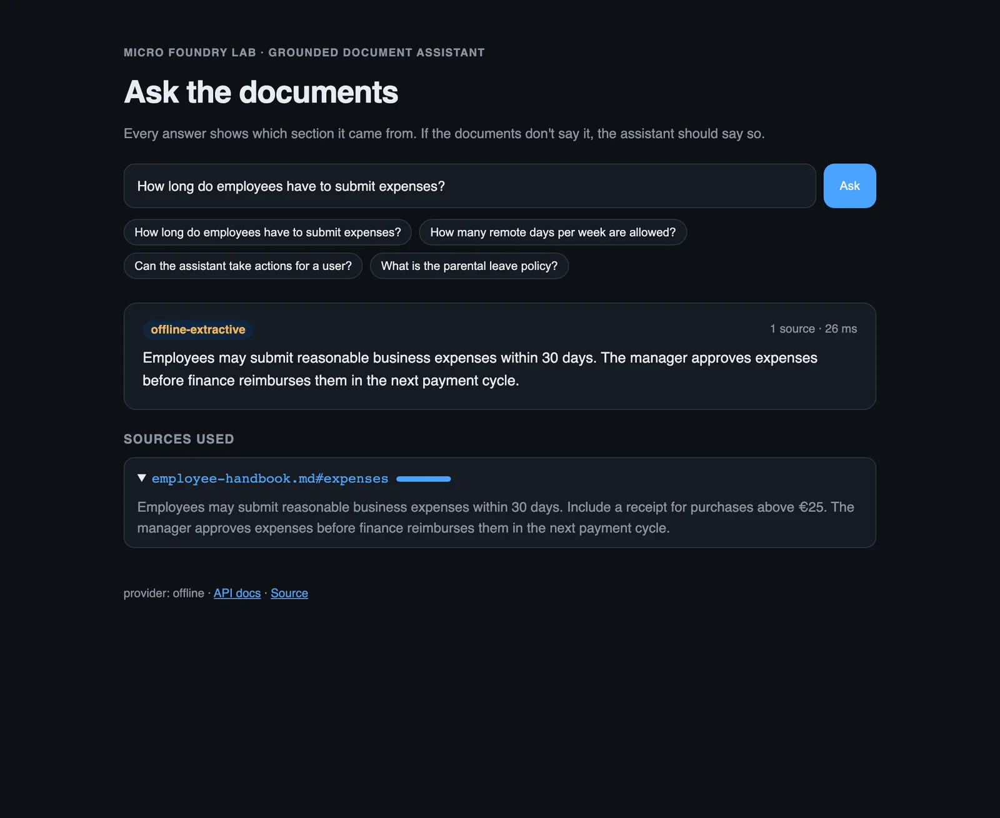
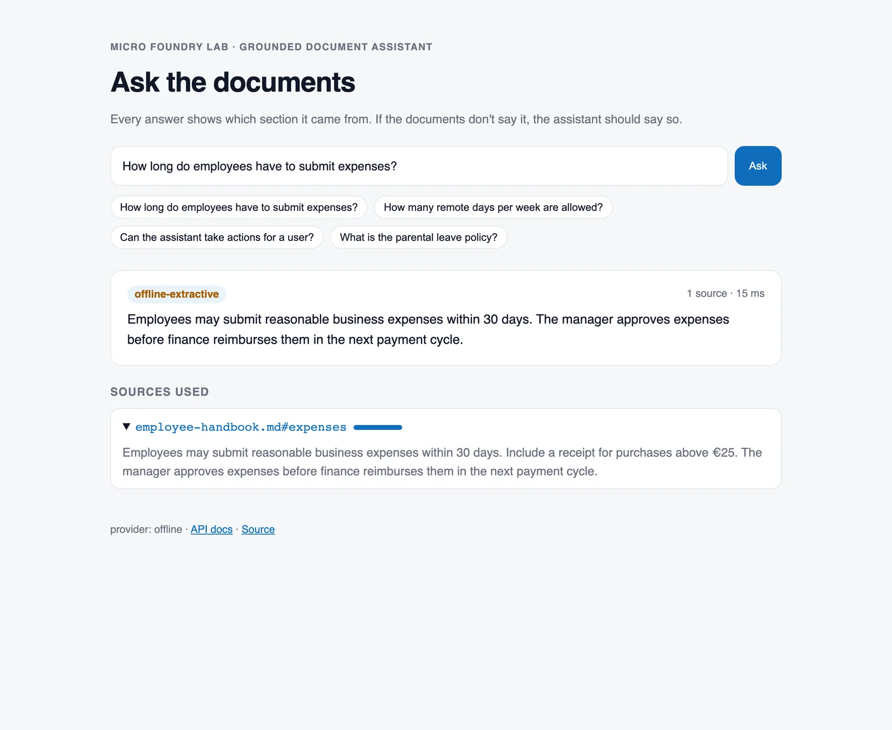
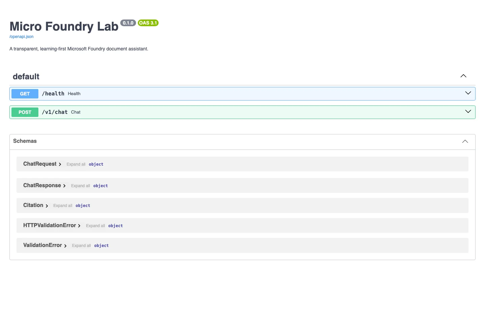

An answer is only worth something if you can check it.
Four small labs take you from a first model call to a document assistant that returns the exact section each answer comes from, declines questions the documents do not cover, and ships with a regression suite. An offline provider runs the whole retrieval, answer and citation loop without Azure, and doubles as the baseline a paid model has to beat.

Why it exists
A fluent answer with no source is a liability.
A model answers confidently from nowhere. Nobody can tell which paragraph it used, a question the documents never covered still gets an answer, and a prompt tweak silently makes things worse because nothing re-checks the old cases.
Retrieval works on Markdown sections, so a citation points at a paragraph, not a file. A minimum score makes the assistant decline instead of inventing. Retrieved text is treated as untrusted context. And an evaluation suite runs before any prompt, model or retrieval change.
How it works
A learning path with an outcome at each step
Learn one concept at a time and only add infrastructure once it earns its place.
Lab 01 · Model call
Send a prompt to a Foundry model with Entra ID authentication. No API key goes into the repository.
Lab 02 · Structured output
Treat model output as data to validate. An offline mode shows a reply that looks right being rejected.
Lab 03 · Grounding
Section retrieval with stop words and a minimum score, section citations, and a decline path. Served as an API and a page.
Lab 04 · Evaluation
Regression cases for useful and safe answers, runnable for free against the offline provider in CI.
From a question to a checked answer
Screens
What it looks like
Captured from a local run with the offline provider.


Evidence
What is real, and what is not
REAL Built and verified
- The offline provider and the retrieval, citation and decline loop run with no Azure account
- The evaluation suite runs in CI on every push against the offline baseline
- The Foundry path uses the current projects SDK and Entra ID authentication
SIMULATED Mocked or not built yet
- The offline provider does not call a model: it answers with the best-matching source sentences and says so in every response
- Retrieval is keyword matching over sections, a deliberate stepping stone before Azure AI Search or a vector store
- The example documents are small and fictional; the lab shows a method, not a production knowledge base
Run it yourself
Run it locally
pip install -e ".[dev]"
MICRO_FOUNDRY_PROVIDER=offline uvicorn micro_foundry.main:app --reload
# open http://127.0.0.1:8000 (Swagger at /docs)
MICRO_FOUNDRY_PROVIDER=offline python -m micro_foundry.evals # free baselineGo deeper